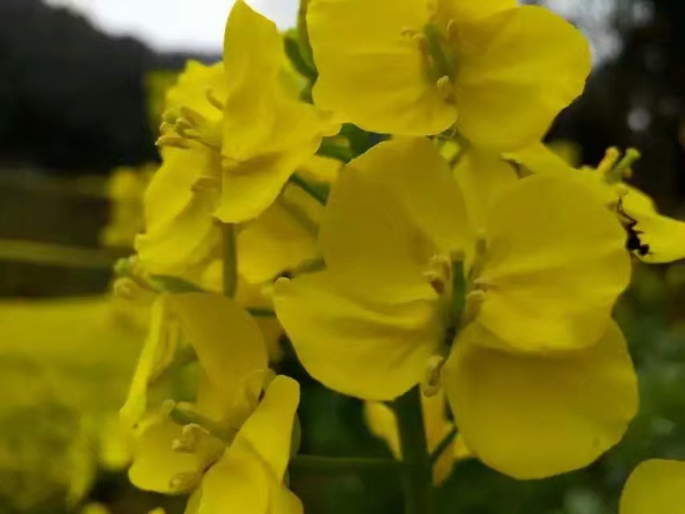
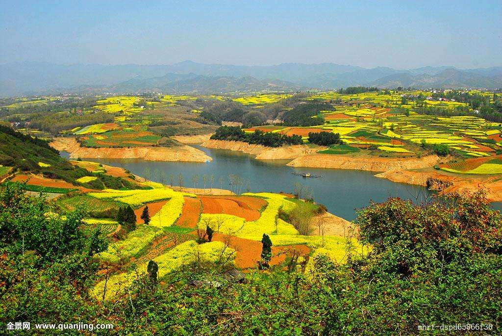

为充分发挥“中国最美油菜花海”这一名片作用，扩大汉中在国内外的影响力，促进旅游产业快速发展，汉中市报 请省政府批准，自2010年起，相继在南郑、洋县、勉县、汉台、城固、西乡成功举办了八届油菜花海旅游文化 活动，每年春天举办的中国最美油菜花海汉中旅游文化节 ，已成为汉中最响亮、最靓丽的城市名片，被评为“中国十大花节花会”。 相约花海汉中，情醉汉人老家。 西部网讯（实习记者 马晴茹）3月7日，以“金色花海、 真美汉中”为主题的2018•中国最美油菜花海汉中旅游文化节推 介发布会在西安举行3月18日，将在汉中市勉县沔水湾广场举行2018油菜花节启动仪式。3月至4月下旬 ，勉县主会场系将陆续举办“一家四地”社交直播活动、“定军山下勉县情”主流媒体直播 聚焦汉中勉县暨全国摄影大赛、 举行航拍大赛、举行天荡山文化旅游节优秀电影展播周、在诸葛古镇举行开园2周年庆典系列活动及油菜花海 30公里毅行等25项活动 。 今年的中国最美油菜花海汉中旅游文化节活动时间从3月上旬至5月上旬，主会场设在勉县。 记者从推介会获悉，2018•中国最美油菜花海汉中旅游文化节活动由汉中市人民政府主办 ，汉中市旅游发展委员会和各县区人民政府承办，活动时间从3月上旬至5月上旬，主会场设在勉县， 汉台、南郑等10县设分会场，将陆续举办以油菜花海为主的系列主题活动和具有地方特色的旅游文化活 动。节会以“金色花海、真美汉中”为主题，定位是“城市的名片，文化的平台，旅游的盛会，百姓 的节日”，运作方式是“政府主导，企业参与，全民共享”。
为确保游客良好的旅游体验，勉县在交通、服务等方面提供精细化保障，以确保交通畅通 、便捷，活动期间，汉中市精心设计并打造了33个观花点，策划推出了23条油菜花海精品旅 游线路，除此之外，还特别推出春季特色文化、生态旅游产品，主要有：汉文化感知体验之旅 、文化古镇深度体验之旅、生态诗画体验之旅、民族民俗风情体验之旅、红色经典之旅。 主会场勉县武侯祠、马超墓祠、褒河栈道等各大景区景点也将以崭新的面貌彰显三国文化的无限魅力 ，游客除了参与大型祭祀、攀登定军山、商品展销等系列活动外，还可到高山茶园亲自体验采摘茶叶、 制茶的乐趣，与大自然零距离接触，品尝春茶的芳香。油菜花节 油菜花节